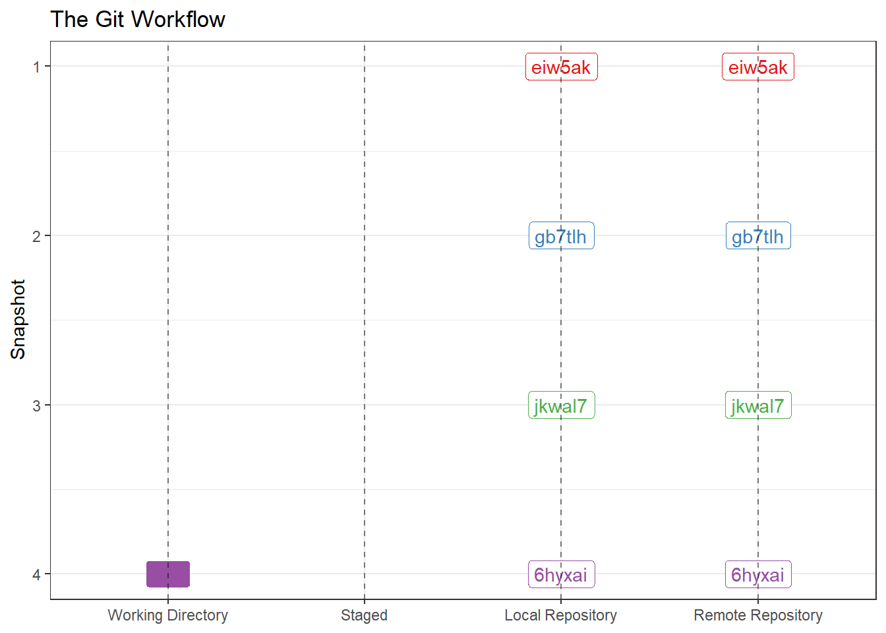
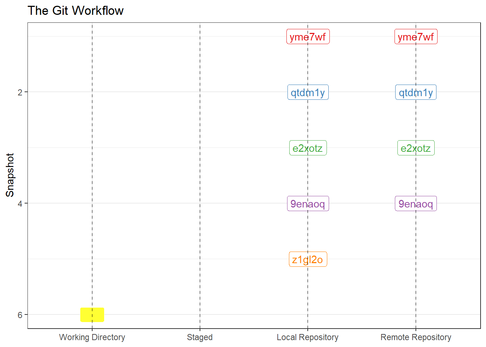

3 Collaboration Using Git
Git has some amazing reproducible research capabilities that can become really powerful in large complicated analyses. That said, utilizing Git comes with an overhead that may not be justified for small projects unless you consider collaboration with future analysts including yourself. To utilize Git’s collaborative potential create a remote repository on github. I created one called git_practice.
3.0.1 Interacting with your Remote Repository
3.0.1.1 git push
To link your local repository to a remote repository use git remote. In the terminal output below I added a remote repository named “origin” and provided a url where the repository is located. The second command “pushed” my local repository to my remote repository. Files associated with this repository are now stored in a location where they can be accessed by others for collaborative work.
amreimer@DFGSXQDSF206801 MINGW64 /s/RTS/Reimer/Research_Best_Practices/git_practice_A (master)
$ git remote add origin https://github.com/adamreimer/git_practice.git
amreimer@DFGSXQDSF206801 MINGW64 /s/RTS/Reimer/Research_Best_Practices/git_practice_A (master)
$ git push -u origin master
Enumerating objects: 14, done.
Counting objects: 100% (14/14), done.
Delta compression using up to 16 threads
Compressing objects: 100% (13/13), done.
Writing objects: 100% (14/14), 1.55 KiB | 52.00 KiB/s, done.
Total 14 (delta 3), reused 0 (delta 0), pack-reused 0
remote: Resolving deltas: 100% (3/3), done.
To https://github.com/adamreimer/git_practice.git
* [new branch] master -> master
branch 'master' set up to track 'origin/master'.
amreimer@DFGSXQDSF206801 MINGW64 /s/RTS/Reimer/Research_Best_Practices/git_practice_A (master)
$After pushing to github your repository now looks like Figure 4.1.

3.0.1.2 git clone
Imagine a situation where you would like to work on your analysis from a home computer1. If your analysis is stored as a git repository it is easy to obtian a copy from a differetn machine. In the terminal sequence below we: navigate to a new (empty) folder where I would like to copy the git repository and clone the remote repository to my local machine.
amreimer@DFGSXQDSF206801 MINGW64 ~/OneDrive - State of Alaska/Documents
$ cd S:/RTS/Reimer/Research_Best_Practices
amreimer@DFGSXQDSF206801 MINGW64 /s/RTS/Reimer/Research_Best_Practices
$ ls
Biometric_Best_Practices/ 'Data super group'/ Git_book/ git_practice_A/ git_practice_B/ git_practice_C/ SSDL_test/
amreimer@DFGSXQDSF206801 MINGW64 /s/RTS/Reimer/Research_Best_Practices
$ cd S:/RTS/Reimer/Research_Best_Practices/git_practice_C
amreimer@DFGSXQDSF206801 MINGW64 /s/RTS/Reimer/Research_Best_Practices/git_practice_C
$ ls
amreimer@DFGSXQDSF206801 MINGW64 /s/RTS/Reimer/Research_Best_Practices/git_practice_C
$ git clone https://github.com/adamreimer/git_practice.git .
Cloning into '.'...
remote: Enumerating objects: 14, done.
remote: Counting objects: 100% (14/14), done.
remote: Compressing objects: 100% (10/10), done.
remote: Total 14 (delta 3), reused 14 (delta 3), pack-reused 0
Receiving objects: 100% (14/14), done.
Resolving deltas: 100% (3/3), done.
amreimer@DFGSXQDSF206801 MINGW64 /s/RTS/Reimer/Research_Best_Practices/git_practice_C (master)
$After git clone the my git work space on my home machine looks the same as Figure 4.1. If I make changes, add the changed files and commit those changes the local (home) repository will be one commit ahead of both your remote repository and the local repository on your work machine Figure 3.2. git status would verify the discrepancy between your local repository (at home) and your remote repository and git push -u origin master would sync the two repositories.

3.0.1.3 git pull
Now your local repository at work will be one commit behind your local repository at home and your remote repository. In the terminal sequence below we use git status to verify the remote repository is one commit ahead of the local (work) repository and git pull to fetch the new commit and merge it to your local working directory.
amreimer@DFGSXQDSF206801 MINGW64 /s/RTS/Reimer/Research_Best_Practices/git_practice_A
(master)
$ git status
On branch master
Your branch is behind 'origin/master' by 1 commit, and can be fast-forwarded.
(use "git pull" to update your local branch)
nothing to commit, working tree clean
amreimer@DFGSXQDSF206801 MINGW64 /s/RTS/Reimer/Research_Best_Practices/git_practice_A
(master)
$ git pull
Updating 247d383..b3b6ae3
Fast-forward
fib_seq.R | 5 +++--
1 file changed, 3 insertions(+), 2 deletions(-)
amreimer@DFGSXQDSF206801 MINGW64 /s/RTS/Reimer/Research_Best_Practices/git_practice_A
(master)3.0.2 Interacting with a Peer’s Remote Repository
How you interact with a peers remote repository depends on your goals. We will discuss three typical use cases below.
3.0.2.1 git clone - To Copy/Modify Code
Imagine a situation where a peer has some code written which you would like to modify for a similar project2. Use git clone as described above. You will be able to create a copy of their repository and work on your local machine as usual, but you will not be able to push changes back to the remote.
3.0.2.2 git clone, git push, git pull - To Collaborate (closely)
If you and a peer are working closely on a analysis it may be appropriate for the owner to add their peer as a collaborator to the project. This is a point-and-click task from your github repository page (Settings>Collaborators>Add people>keypunch the username). The collaboator you can push and pull changes to their remote as if you were the owner. This arraignment is only appropriate for peers who you trust to commit changes of which you both approve. In practice this likely means there will be personal communication to coordinate each persons efforts.
3.0.2.3 fork - To Collaborate (with autonomy)
Fork is a GiHub operation which creates a copy of a remote repository under your Github ID. After the fork is created you can clone it to you local repository as described above. Your local repository can be configured to sync with the original (upstream) repository so that you local repository contains changes the original author made after fork. If you make significant changes to the repository that the original author may be interested in you can submit a pull request which notifies the original author about the changes you have made and gives them the opportunity to include your code in their repository.